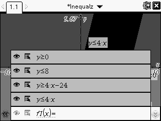

Lesson Description
Students will use the TI-Nspire CAS to prove their conjecture that a given shape is a parallelogram.
VA SOL Standards
This lesson is suitable for students in an Algebra I classroom.
Algebra I Standards
A.1 The student will solve multistep linear equations and inequalities in one variable, solve literal equations (formulas) for a given variable, and apply these skills to solve practical problems. Graphing calculators will be used to confirm algebraic solutions.
Algebra II Standards
AII.8 The student will recognize multiple representations of functions (linear, quadratic, absolute value, step, and exponential functions) and convert between a graph, a table, and symbolic form. A transformational approach to graphing will be employed through the use of graphing calculators.
Lesson Outline (Modifications)
This lesson is a modification of the Perimeters, Areas and Slopes—Oh, My! lesson provided by Texas Instruments, for the TI-84 handheld. The original lesson makes use of the Inequalz application on the TI-84.
- On the CAS, open a new document and save it as Inequalz. Add a Graphs page. Enter and graph the following functions. You will see the f1(x) change to y when you change the equals sign (=) to a less than (≤) or greater than (≥) sign.
 After you have graphed the functions, change your window settings to those shown to the right.
After you have graphed the functions, change your window settings to those shown to the right.  You should see a screen like this. (See the 'Other Advice' below on the shading of the feasible region.)
You should see a screen like this. (See the 'Other Advice' below on the shading of the feasible region.)  Click Intersection Point(s) under the Points & Lines menu. Then click any two lines that intersect in your graph. The intersection point will be created and its coordinates will be displayed. Use this tool to find the other three intersection points. Press the esc button to exit out of the tool. Now label the points by 'Right clicking' (pressing ctrl then menu) on each point. From the origin, go counterclockwise, A, B, C, D.
Click Intersection Point(s) under the Points & Lines menu. Then click any two lines that intersect in your graph. The intersection point will be created and its coordinates will be displayed. Use this tool to find the other three intersection points. Press the esc button to exit out of the tool. Now label the points by 'Right clicking' (pressing ctrl then menu) on each point. From the origin, go counterclockwise, A, B, C, D.- As in steps 5 and 6 in the lesson, brainstorm ideas on how to determine whether quadrilateral ABCD is a parallelogram. Provide mathematical evidence to support your conclusion. As in step 7, calculate the perimeter and area of ABCD.
Notes on this Lesson
Appropriate Use of Technology
As the original lesson calls for, the TI-84 is a sutible tool for completing this activity.
Other Advice
When graphing inequalities on the Nspire, the calculator will shade the union of the functions, rather than the intersection. For example, when graphing y≥0 and y≤5, the entire screen will be shaded instead of only the feasible region. This is something to watch out for when implementing this lesson.